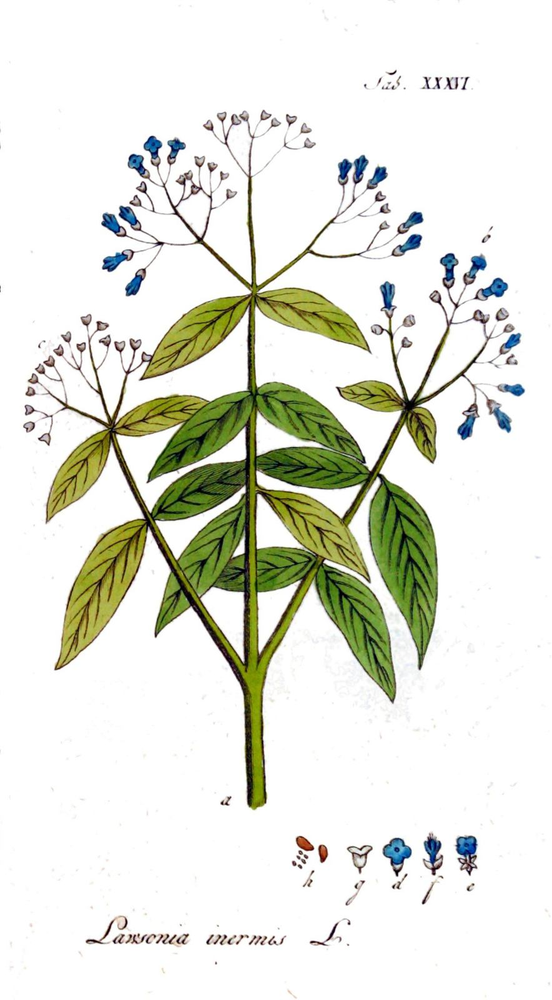
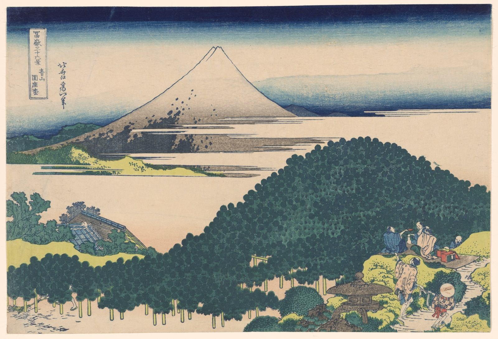
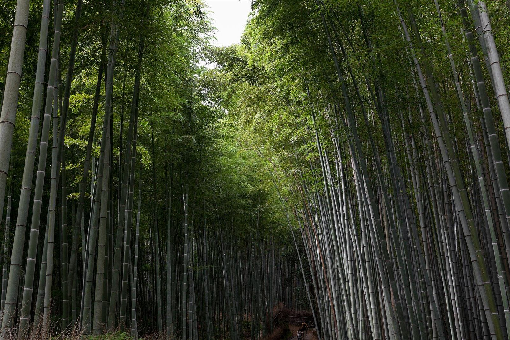
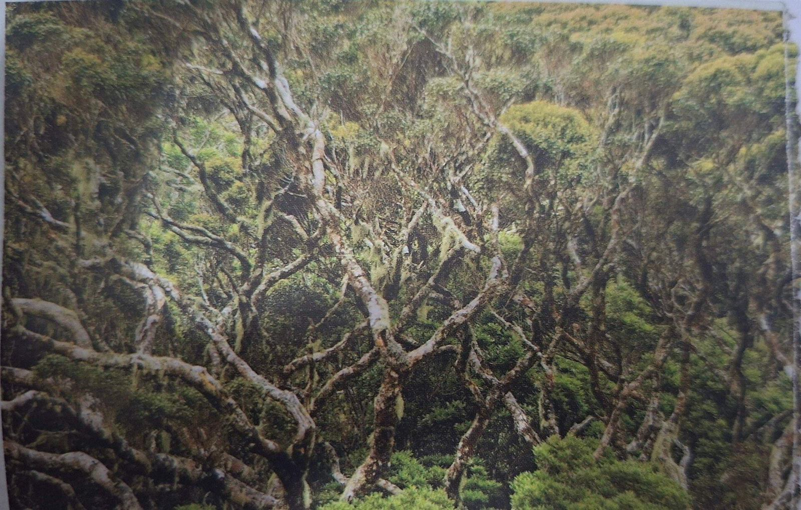
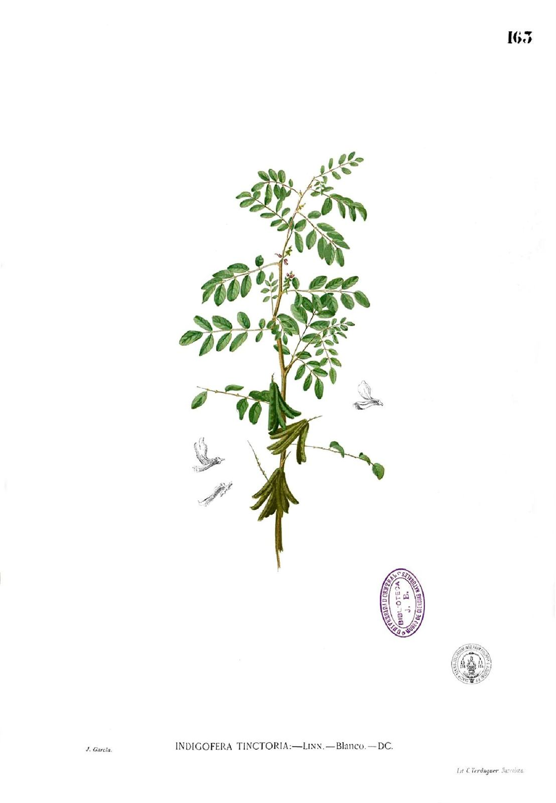
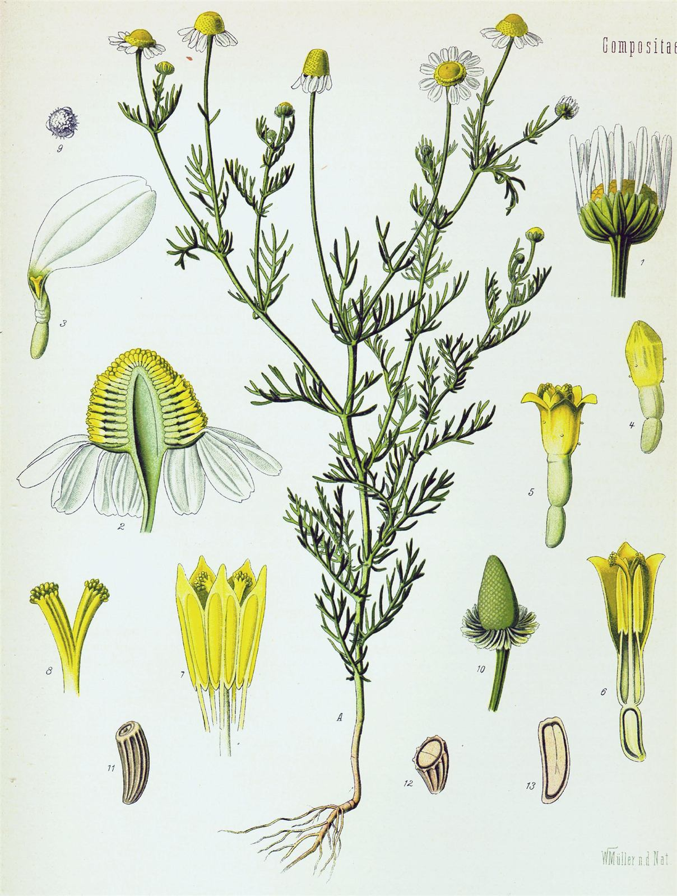
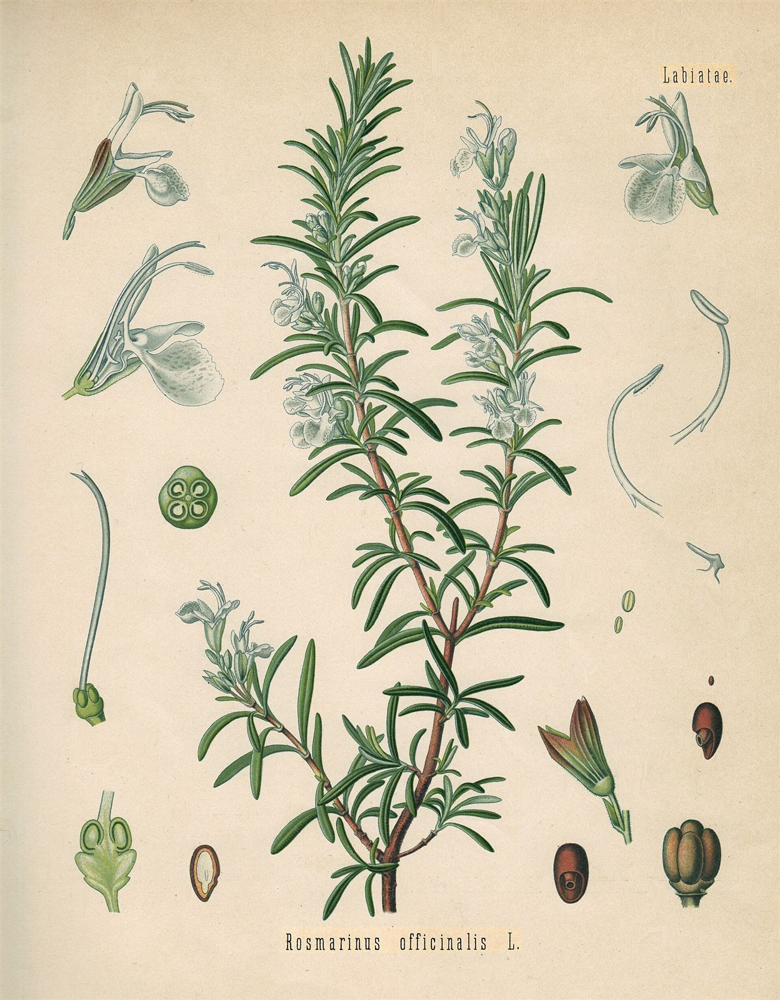
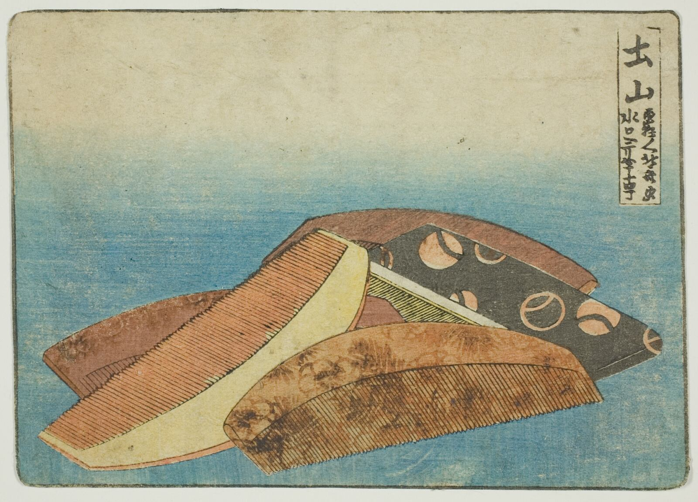

ヘナ
指甲花 — 植物由来カラー・グレイカラーに
葉を粉にして髪を染めます。白髪は明るい褐色にやわらかくなじみ、髪の表面にハリが残ります。



東京・〇〇駅から徒歩5分。一度にお一人だけを迎える、植物由来のケアのヘアサロンです。
予約は一枠にお一人。ほかのお客様の声も視線もない店内で、髪と地肌の調子を見ながら、ゆっくり手を入れていきます。切りすぎない、変えすぎない。今日のあなたの延長に、少しだけ心地よさを足します。
カラーもスパも、使う植物はこの4つが中心です。髪と肌の状態を見て選び、必要なときだけ化学染料と組み合わせます。

指甲花 — 植物由来カラー・グレイカラーに
葉を粉にして髪を染めます。白髪は明るい褐色にやわらかくなじみ、髪の表面にハリが残ります。

木藍 — ヘナに重ねて、深いブラウンに
藍染めと同じ仲間の葉。ヘナの上に重ねると赤みが落ち着き、こげ茶から黒まで色を深められます。

カミツレ — 頭皮ケアスパに
スパのオイルとローションに使います。やわらかな香りの中で、60分ほど何も考えない時間をどうぞ。

マンネンロウ — シャンプーの香りに
店のシャンプーの香りはこの葉から。すっきりとした香りで、施術のあとも地肌が軽く感じられます。
髪も庭のように、時間をかけて手入れするもの。森時間という名前には、その考えを込めました。
オーナースタイリストがひとりで迎えます。美容師歴15年、都内のサロンを経て森時間を開きました。

「上手に手放すことも、髪のためだと思っています。」乾かし方や朝のまとめ方まで、家で再現できる方法をお伝えします。必要のないメニューはおすすめしません。図は葛飾北斎「土山の櫛」1804年ごろ
もちろんです。初回はカウンセリングに少しお時間をいただくので、余裕をもってお越しください。
植物由来の薬剤を中心にご用意しています。事前のパッチテストをおすすめしているので、ご予約のときにお知らせください。
席がひとつだけの静かな店内です。静かに過ごせるお子様なら一緒にお越しいただけます。事前にご相談ください。
現金、各種クレジットカード、QRコード決済が使えます。
前日の18時までにご連絡いただければ、キャンセル料はかかりません。
ローズマリー、1887年の図譜より / 嵯峨野の竹林